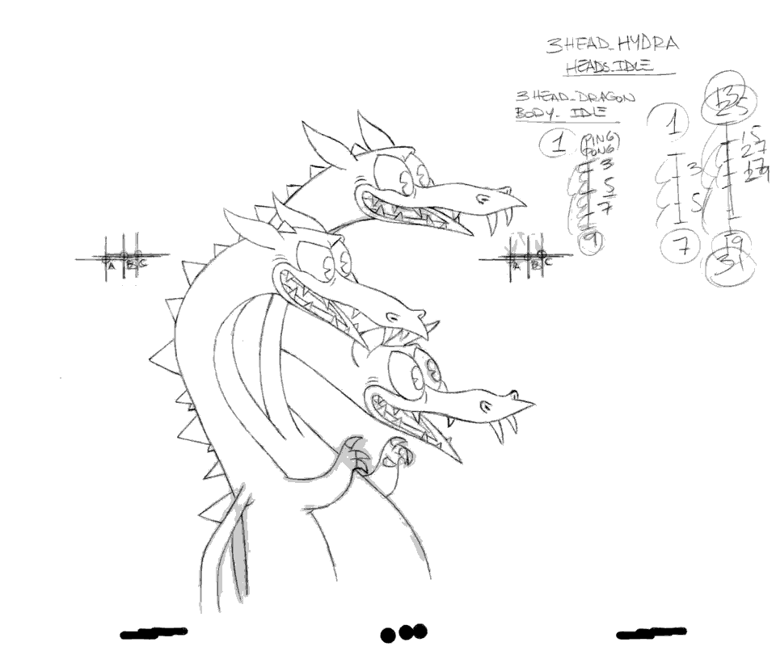

Cuphead Creators
You all know about Cuphead right? It's the highly rated shoot-em-up that was released in 2017 with a charming 1930s inspired animation style. In 2022 the game received new DLC that added many new bosses and an animated series was released on Netflix. In Japan a physical version of the game was also just released with the bonus soundtrack's cover being drawn by Yoshitaka Amano! And well... I suppose we should really get into it now. This column is my chaotic playground where I'm able to do anything I want as a crazed dog god. So this time, on a whim, I decided to interview the game's creators.
The works that
inspired you
Toby: The animation style seen in Cuphead faithfully recreates the style of animation seen in the 1930s, but I think the gameplay and difficulty of the game are heavily influenced by older Japanese action games. What Japanese game inspired you the most? What was the game that made you an otaku?
Jared: Chad and I both grew up playing retro games from the 80s and 90s. I don't mean to exaggerate but I think we must have played hundreds of them. While it's impossible to name them all that had an impact on Cuphead, there's a few iconic games that inspired us in terms of boss movement patterns, character animations, and game design concepts. Such as Gunstar Heroes, Contra III: The Alien Wars, Contra: Hard Corps, Mega Man X, Street Fighter 3, Thunderforce, Radiant Silvergun, and Ikaruga!
Toby: Those are all classics! I figured Gunstar Heroes would be high on that list. There's some elements in Cuphead that show influence from it such as the chaser weapon and the boss designed after the 8-ball in billiards is based on Melon Bread from Gunstars right? Us foreign game developers can't help but make parodies of Melon Bread can we...
Toby: It's easy to imagine that Cuphead's art style is the result of hard work and tons of research. It's like the work of the Fleischer brothers, with characters transforming in a strange way and encapsulating the overall charm of 1930s animation. Were there any cartoons in particular that had a significant influence on the game?
Chad: It's impossible to list all of them due to the sheer amount of characters and films we were influenced by. If I were to narrow it down, notable influences would include 1920s and 1930s works such as Betty Boop, Popeye, and Disney's short animation series Silly Symphony. The Fleischer brothers' short film 'Bimbo's Initiation' also contains many elements that became the foundation for Cuphead. It showcases that rubber hose animation style, it has an eccentric and eerie tone and the technique of exaggerating and distorting characters is used throughout. But really, the game takes influence from all over that era of animation!
Toby: I knew Bimbo's Initiation would be an influence! To all Cuphead fans, if you're interested in this era of animation Bimbo's Initiation is now in the public domain so you can watch it for free online! Also... to the editor of Famitsu magazine, you can probably put a frame from it in the magazine...! (*Toby looks at the editor with puppy dog eyes.)
About game production
Toby: Can you walk us through the process of creating a boss for Cuphead?
Jared: When we start making a boss we first have a discussion about their design. We settle on their main attacks, patterns and the battle's flow as a whole. Typically at this stage, we have a few rough visual ideas for the battle, such as a deity that floats in the air, or dogs piloting planes. Once we decide on the essential elements of how the boss will transform and what kinds of bullets they will shoot, the kind of attack patterns that will work for the boss becomes clearer. Once that's finished we immediately start programming their attack patterns with our programmers to get a feel for how they'll move. At the same time we start working on the visual concept and think about what the boss should look like and combine the actual visuals with the temporarily programmed attacks. This process of trial and error continues until quite late in the process to ensure that the attack patterns and visuals match well, adjusting either of them as needed. All of the game's visual assets begin with a paper sketch on 16 or 12 field animation paper. From this rough stage until the final version, we progress like this until everything is revised and then we overlay a fresh sheet of animation paper and ink it. When everything is inked we then move onto the only digital part of the process, coloring. At first we planned to color directly onto the animation cells and we did start out by doing that however when put them into the game and compared side-by-side to ones we colored digitally there was no noticeable difference so even though we were particular about doing everything by hand we made the choice to do the coloring digitally which saved us a few years of development time.
Toby: People tend to mistakenly believe that games like Cuphead are made just by animating on cells and then just adding collision and hitboxes but that's not quite how game development works. This also isn't how animated films are made but the thought of Pete's corkscrew kick from Steamboat Willie being overpowered and needing to be reworked occurs to me. Disney says "Tsk... This is bugged, we're going to have to ship a balance patch..." and then they make Iwerks go back and rework the hitboxes.
Toby: I read in an article once that the main character's design had around 150 revisions until the final design was decided on. I'm sure you've talked about this in other interviews before but can you tell the Japanese fans how the final design was chosen?
Chad: I can't remember an exact number but it was most likely close to 300! In the early stages we had the idea of making a "normal" cartoon character in a similar vein to Mickey Mouse, Bimbo, Oswald, or Felix the Rabbit but in the end the 1930s idea of attaching a face to an object really resonated with me. When I came up with the idea of a cup with a straw sticking out of it I thought "This is it!" The movement could be versatile and the impact from a glance was outstanding. Shigeru Miyamoto, the creator of Mario, once said that it's fun to think about the characters in a game as actors on a stage. So we thought if the characters had strange movements like classic cartoon characters and a boy with a cup for a head greatly expands the range of expressions and makes them a perfect fit as the protagonist for our game.
Toby: It's great the character has a captivating cuteness and the wide array of expressions is great. It's a simple design that allows anyone to draw it. I've seen children draw the character in unexpected places all over America (I suppose this also goes for my characters...) You brought up Mario, but we should get the studio behind the Minions to work on a Cuphead movie! I've already started working on the Cuphead rap to be used in the movie! (But I don't think my name will make the credits.)
Toby: Is there a boss in particular that repeated the process of, prototype, testing, and revision?
Jared: Am I allowed to say "All of them"? The bosses in Cuphead are built on the delicate balance between game design and art. We want the visual to be visually pleasing but while also ensuring they don't hinder the readability of the attack patterns. The three headed dragon boss character Grim Matchstick that appears in the main campaign had a rather complex visual design so we paid close attention to it in that regard.
Toby: In programming this process is called Iteration right? Iteration... I should try it sometime...

Toby: Were there any boss ideas that you wanted to use but for one reason or another just didn't work out?
Jared: It was nice to look back on Cuphead's world during the development of The Delicious Last Course DLC that was released last year. Thanks to that we were able to use some of the concepts we came up with for the main game that we really liked but that didn't make the cut. For example the King of Games stage has many bosses that must be parried based on designs that weren't completed for the main game. That being said I'm sure Toby has an idea about this, there's many ideas that we just had to cut all together. An example being a pachinko-themed boss that was going to appear in the fight with King Dice but it was cut from the game. The boss was featured with detailed explanations in the recently released Japanese-exclusive physical release by Super Deluxe Games in the accompanying mini-magazine called Deluxe+.
Toby: Looking back at the first trailer for the game everything looks quite different from the final game, even giving a planned 2014(!) release window. The game actually ended up releasing in 2017, but the final game ended up great so that's okay. If it's alright can you tell us about how the initial release date was decided and how it ended up changing?
Chad: We've always been open about it but the development of Cuphead was a real learning experience for all of us. I think this is the case for most developers when attempting to make a game for the first time. There were so many things that we only truly understood through getting hands on experience. One of those things was just how to plan the development up to release. When the game was first shown off with that 2014 release date we envisioned the game as a much smaller scale project compared to how the final version turned out. We initially thought of the game as being a boss rush of sorts where the player would select bosses to fight from a lineup. However, the response we got from that initial trailer was unexpectedly massive... Because of that we knew we had to go all in on the project. We added sidescrolling stages, a world map connecting the levels and decided to increase the amount of bosses. It took quite some time to bring it all to life but as you mentioned we believe it turned out well!
Toby: A system where you select bosses from a menu... Sounds like Mega Man doesn't it? Thinking about that brings some new song ideas to mind... (King Dice ga Taosenai)
Final Thoughts
Toby: Were there any moments since you started making games where, despite the hardships, you felt that it was really worth it to stick with it and in the end you were glad you persevered?
Chad: It's not a specific moment but seeing the fans' reactions to Cuphead and The Delicious Last Course is amazing. We've been sent amazing fanart and there's even people who have gotten Cuphead tattoos... After all these years I'm still not used to it. Moreover, when I hear stories of people beating bosses together with their families or showing Cuphead to their grandparents who grew up watching the kinds of animation the game pays homage to, and how creating my own game has brought joy to someone's life, I truly feel glad that we made it. I've even heard stories of people choosing to study animation in school because of Cuphead. There's a lot of unbelievably great things that have come about because of it. Cuphead has even been added to Super Smash Brothers Ultimate as a Mii costume. I'm sure Toby had similar feelings with Sans's costume. Being able to recreate Cuphead into a 3D character alongside Mr. Sakurai and the team at Nintendo, as well as seeing Cuphead fight alongside such well known video game characters that inspired me to create games in the first place felt like a dream come true.
Toby: That's right!! Seeing Sans lined up on the Smash character select screen really felt like a dream. To think the day would come when you can pick to play as Incineroar over Sans... But really it truly has been an honor. Cuphead's moves are a perfect fit for the Mii Gunner, right? I'm grateful to Mr. Sakurai and Nintendo for considering indie game characters like Cuphead for Mii Fighters and Assist trophies! (And if there's a similar opportunity in future might I suggest a Hollow Knight costume for Sword Fighter...?)
Toby: Have you two ever been to a Japanese-style family restaurant before? If you have, please let me know your favorite one.
Jared: Actually me and Chad have never been to Japan but we've always wanted to go. Both friends and co-workers who have stayed or lived there have all said it's a really nice place. So if we're ever all there around the same time let's all go to your favorite family restaurant!
Toby: I- Oh... I see.. Well I uh, only know Denny's and I was hoping you could... give some suggestions... or... something... um...
That's all this time! The above is an English interview that features 3 English speaking game developers (that for some reason was translated into Japanese and published only in Japan by a Japanese magazine)
[Translator's note: and then was retranslated into English by me. What fresh hell is this?]